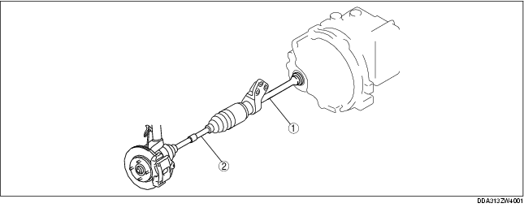

Front drive shaft location index  . 1 Joint shaft (See JOINT SHAFT PRE-INSPECTION) (See JOINT SHAFT REMOVAL/INSTALLATION) (See JOINT SHAFT DISASSEMBLY/ASSEMBLY) 2 Drive shaft (See DRIVE SHAFT PRE-INSPECTION) (See DRIVE SHAFT REMOVAL/INSTALLATION) (See DRIVE SHAFT DISASSEMBLY/ASSEMBLY)